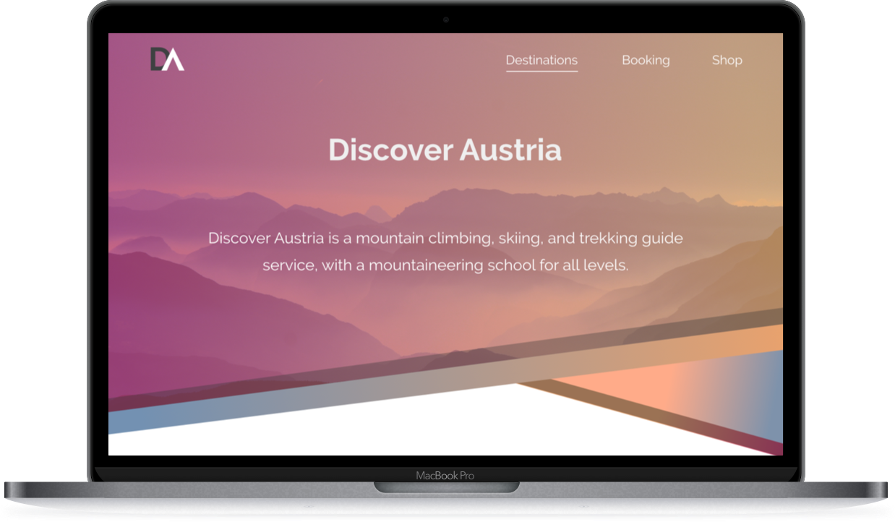
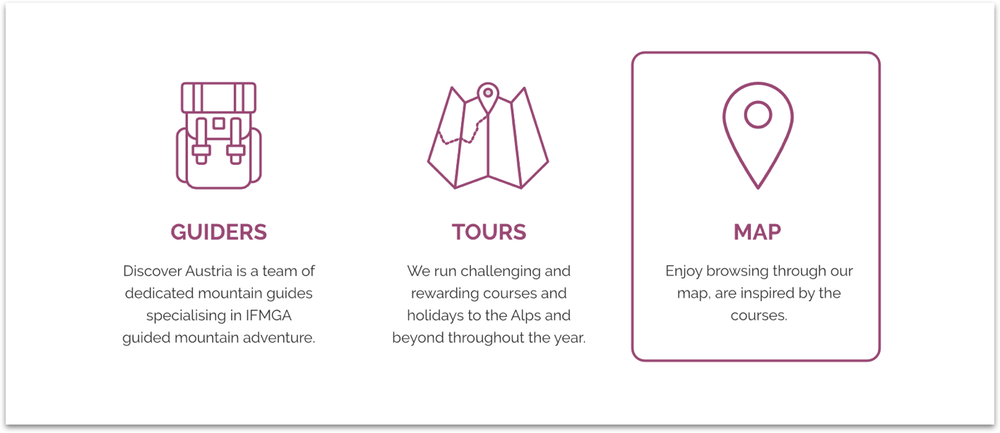

Discover Austria
This is my first individual web design project, where I focused on the above the fold experience.
Overview
I have created a homepage for a climbing service, Discover Austria, where the user can search for tours with a map, or book organized tours with guides. The colorful header is eye-catching, to complement these colors and keep the design clear was the big challenge of this project.
 The outline icons give a pure feeling to the page and help the user with easier orientation on the site. This project was originally only created for desktop, but as a challenge I have decided to create a design for mobile as well.